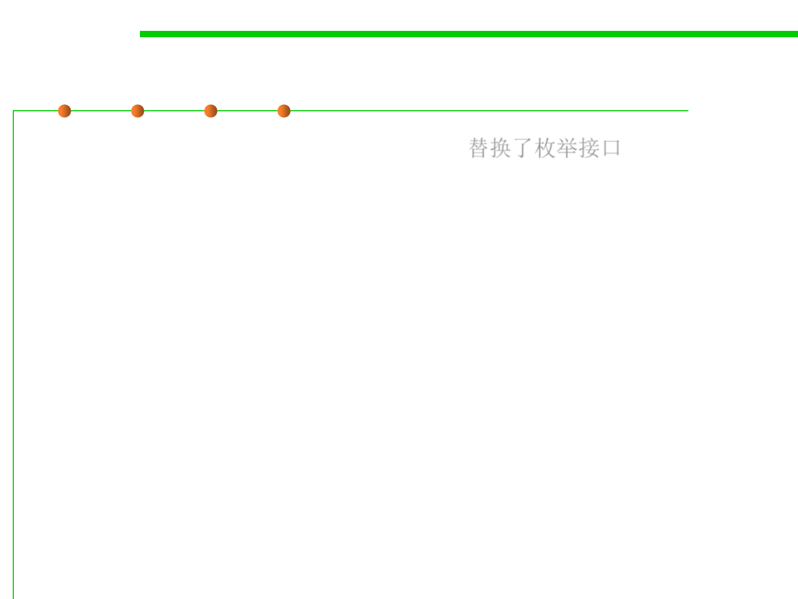

Iterator Interface
5.2 Construction for Reuse
▪
Replacement for Enumeration interface
替换了枚举接口
–
Adds remove method
–
Improves method names
public interface Iterator<E> {
boolean hasNext();
E next();
void remove(); // Optional
}